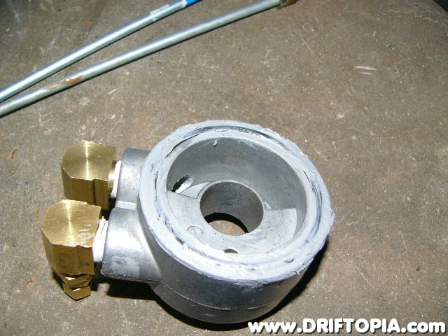
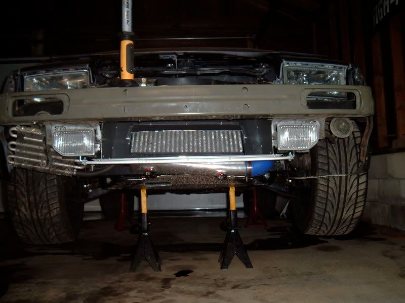

-
Ok so I've just come across someone parting out an 84 Turbo auto, and I started thinking about the oil cooler, how worthwhile are these in reality? We'll see what else I grab based on prices and condition but that I'm at a bit of a crossroad about. -
Mine leaks from everywhere. That's all I know. If I could figure out how to get the long oil filter stud out and the short one in, I would get my repaired. Might be nice for road racing.BLOZ UP.com
It is not recommended to confirm proper installation by driving into walls or other barriers as this could cause personal injury or damage to the vehicle. -
I had to take mine out because we launched a rod out the side of the block, and I didnt want any metal to end up in the new motor, and so far we've been fine, but we havent really raced any WARM races yet. I'll surely need atleast an aftermarket oil cooler by summer.
On that note, anyone know of a remote filter base that will thread onto the stock assembly, so I can ditch those silly banjo fitting's and the stock adapter?
-
so general thoughts are it's not worth it then -
What is the car used for? Adding an oil cooler and running a quality synthetic is always a good idea for a turbocharged car, especially if your driving aggressively.
I bought an oil cooler kit a long time ago from autozone. It came with a sandwich adapter which had ports for oil cooler exit and inlet, like this:

The adapter came with several different sized studs, one of which threaded into the VG30 (after removing stock stud). I believe RacinJitter is using a similar sandwich adapter, perhaps one of the Ebay Greddy ones.
I ended up using the oil cooler adapter block from an 84T automatic instead, just because it was already installed. Oil temps stay very low; I havn't seen it go over 200ºF, even during abusive driving in the summer heat."produce first.talk second." -
How'd you remove the stock stud? Without damaging it?BLOZ UP.com
It is not recommended to confirm proper installation by driving into walls or other barriers as this could cause personal injury or damage to the vehicle. -
Double nut method on the stud. 3/4-16 if i recall correctly. The thread on the block is 18x1.5 i think. Don't quote me on either of those though.BLOZ UP wrote: How'd you remove the stock stud? Without damaging it?

1988 300zxt. gt35, stance, etc. Wheels: Varrstoen ES2 18x9.5 et-13 225/40. 18x10.5 et0 245/40
1990 jetta vr6'd -
I guess I need more torques and less oil on the stud. My nuts kept slipping off.
Obligatory: "That's what she said."BLOZ UP.com
It is not recommended to confirm proper installation by driving into walls or other barriers as this could cause personal injury or damage to the vehicle. -
This car will be for weekend racing only, goal is going to be 400-450RWHP on the VG, so probably aftermarket would be the way to go then, Not really worth getting the factory one off the 84 Turbo then. Don't need it right away but came across this car locally so figured I'd see if it was worth while to grab the factory oil cooler.Mike_GruiZinga wrote: What is the car used for? Adding an oil cooler and running a quality synthetic is always a good idea for a turbocharged car, especially if your driving aggressively.
I bought an oil cooler kit a long time ago from autozone. It came with a sandwich adapter which had ports for oil cooler exit and inlet, like this:
The adapter came with several different sized studs, one of which threaded into the VG30 (after removing stock stud). I believe RacinJitter is using a similar sandwich adapter, perhaps one of the Ebay Greddy ones.
I ended up using the oil cooler adapter block from an 84T automatic instead, just because it was already installed. Oil temps stay very low; I havn't seen it go over 200ºF, even during abusive driving in the summer heat. -
I recommend getting a quality oil cooler then. The autozone trans/engine oil cooler I use is far from ideal. Its a tube and fine core, single pass, and really cheap. It works really well. But with rubber lines and such, its probably not appropriate for the track:BLOZ UP wrote: How'd you remove the stock stud? Without damaging it?Vice grips, with towel wrapped around stock stud. Damage isn't important, if replacing it with longer stud.
Richard_85ZXT wrote:
This car will be for weekend racing only, goal is going to be 400-450RWHP on the VG

Get big bar and plate design, with thermostatic distribution block, and AN fittings. Don't ziptie it to your radiator.
"produce first.talk second." -
Thanks for the input, and no I have NO intention of zipties to the radiator. This car is taking forever because I'm not taking shortcuts, thank god I've got my 89 NA for just getting the bug out. On a light note I have started trying to negotiate with the owner of the 84 Turbo to buy both that and the 87 NA as whole cars so I can strip them and grab anything I choose. He thinks the Turbo motor has a bad rod bearing, but 123K mile turbo motor, I have no problem rebuilding it, and freshly repainted car makes me think way more than I should. This is where I say WWRD? (what would reddZX do?)Mike_GruiZinga wrote:
Get big bar and plate design, with thermostatic distribution block, and AN fittings. Don't ziptie it to your radiator.
-
Buy the cars. Fix them. Drive them. Buy 5 more.Feedback- viewtopic.php?f=18&t=19840

-
think that's exactly what reddzx would do, lol -
I have the factory oil cooler setup and to me it is just a little extra security. (until the day it starts leaking…). I dont have an oil temp gauge so I cant comment on temps but Im sure it helps out. My car was originally a turbo auto so it has the so called stronger oil pump which I assume was because of the oil cooler.'85 300zx turbo: exhaust, intercooler, coilovers, etc…SOLD, will be missed
'86 300zx turbo: starting over
'97 Dodge 2500: 12v Cummins …selling and will be missed
'94 Jeep Cherokee: D60 Front 14b rear, both locked and 5.38 gears, 37" mtr's
2015 Ram 2500 megacab laramie cummins black appearance package -
Isnt your car a factory turbo? Or is it digital dash?85z31t88 wrote: I have the factory oil cooler setup and to me it is just a little extra security. (until the day it starts leaking…). I dont have an oil temp gauge so I cant comment on temps but Im sure it helps out. My car was originally a turbo auto so it has the so called stronger oil pump which I assume was because of the oil cooler.- VG30DET (HE341) 86 300ZX - 1982 280ZX Turbo - Headered NA 1986 300ZX 2+2 - 2000 Xterra -

Copyright © 2006–. All rights reserved. Privacy Policy